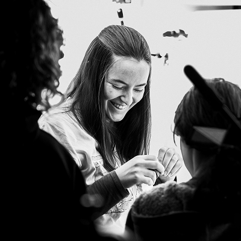

L'Art Animé
Et si les œuvres d'art cessaient d'être immobiles ? Ici, les pinceaux murmurent, les toiles frémissent et les courants artistiques s'éveillent sous l'impulsion de l'animation.
3 œuvres animées
De Matisse à Haring, de grands artistes ont posé leurs pinceaux et l'animation a pris le relais. Il ne vous reste plus qu'à choisir quelle histoire découvrir en premier.
Making-of
Et si les œuvres d'art cessaient d'être immobiles ? De l'œuvre originale à l'animation, comment réveiller des peintures figées depuis si longtemps…



À propos de moi
Une photo à la fois, j'ai fait bouger les œuvres. Voici un peu de contexte sur qui je suis et pourquoi ce projet me tient à cœur.